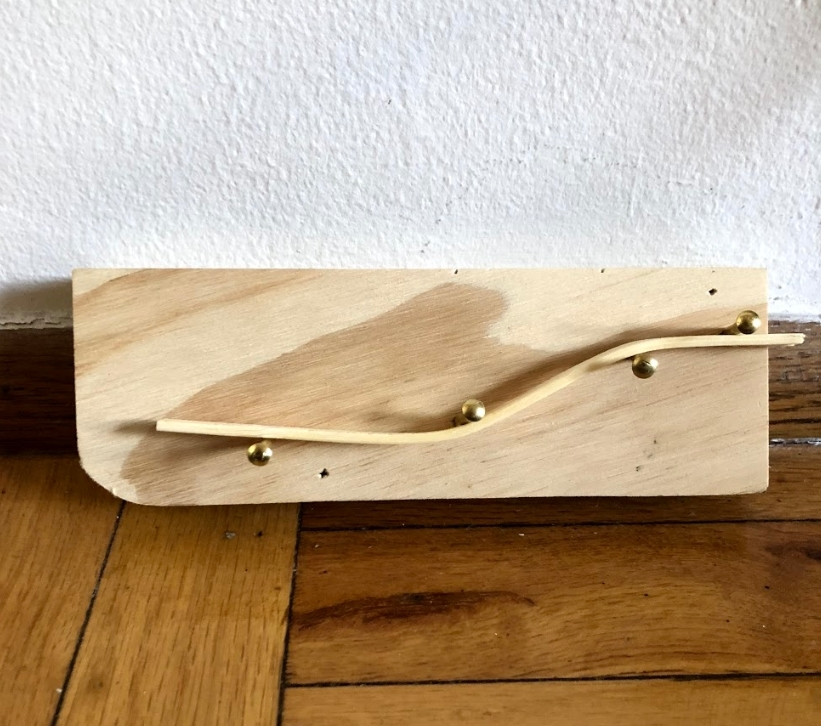

Ideas In From
Everything begins and ends with something natural. Building fundaments out of wood, clay, to them wearing down after years of work, decaying and being torn apart. Our worlds are built to defy, but what happens when a build accepts its mortality?
Phase 1
The natural in an urban setting, the two dimensional piece means to discover relation between the city and the natural tearing at the walls.

Phase 2
Wood is an integral piece in societies. From a symbol, to foundations, it is a key resource. The paradoxical bend shows the flexibility and organic nature, going against the grain while at the same time bending something that is not meant to bend.
Phase 3
We take pride in our creations. A bond is formed, we strive to make it impenetrable, make it last and stand. This ideal is translated into the foundations we build, not taking into consideration what happens when nature steps in and destroys everything you've worked for.